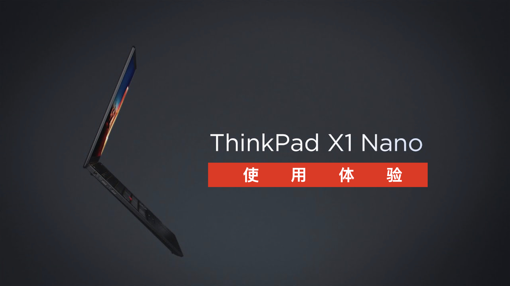

HuangzTalk 001：ThinkPad X1 Nano 使用体验分享（文字大纲）¶

Note
这是 HuangzTalk 节目第 001 期的文字大纲， 你可以通过访问以下地址查看完整的节目视频： https://www.bilibili.com/video/BV1vy4y1J7Qs
节目介绍¶
大家好，欢迎来到 HuangzTalk 节目，我是节目的主持人黄健宏，也是一名计算机图书的作者和译者。
开设这个节目的目的是希望和大家分享一些我关于技术和出版创作的想法，以及一些电子设备的使用感受，希望大家会喜欢。
这是 HuangzTalk 节目的第一期，也是创始期，本来想和大家聊聊我的主业，也就是图书创作和翻译方面的一些感想。
但是之前我买了一台 ThinkPad 的 X1 Nano 笔记本，并且拍了些图放到网上，大家似乎都挺感兴趣的，所以就临时决定先做一期讲讲我关于这台笔记本的使用感受。
需求¶
第一需求 —— Linux 支持要好¶
两台电脑，一台工作用的 MBP 16 ，一台自己组装的 Windows PC ，用于打游戏
因为工作和研究的原因，最近比较需要一个完整的 Linux 环境，做一些 Linux 限定或者重度需要 Linux 的东西
虽然 Mac / Windows 都可以通过虚拟机或者双系统之类的方式支持 Linux ，但都会带来上下文切换的问题，挺麻烦的，还是专门有一台 Linux 电脑会比较方便
第二需求 —— 体积小¶
房间没有地方再放一台台式机
书桌几乎也要放满东西了，唯一可用的就是鼠标旁边的空位，有一张 A4 纸左右的大小
14 寸嫌大，13 寸刚刚好，10、11 寸之类的太小了，不利于健康（眼睛、手指和颈椎）
第三个需求 —— 重量轻¶
偶尔有移动办公的需求，背着 2 公斤的 MBP 加上充电器，相当痛苦
要是带上一两本参考书的话情况就更加严峻了
越轻越好，不要给背部带来太多负担
第四个需求 —— 性能不能太差¶
多数写稿子，但偶尔需要编译软件源码，比如Redis
性能不能太差，而且必须是正经的笔记本，能拿来工作的，不是玩具
这也是我不考虑平板的原因
初次寻找¶
因为最近买了华为的几样东西，手机、电视、耳机之类的，感觉不错，就先去看了华为的 MateBook X Pro
配置不错，11 代 i7，16 GB 内存 LPDDR4 （max36G），特别是屏幕 3k+触摸，很优秀
之前华为的笔记本有预装 Ubuntu 的，所以兼容性应该没问题，但官方没有提供相关的信息，还是有些担心
样子太普通了，没有特色，遮住 LOGO 跟其他别的品牌电脑没有任何不同，喜欢有特色的东西（也许这是第五个需求？！）
再次寻找¶
ThinkPad，感情挺深的一个品牌，10 年前就买过一台 R400 14 寸 TP 做自己的开发机，装的也是 Linux （Ubuntu），第一本书《Redis设计与实现》就是在这台电脑上完成的
之后因为 Ubuntu BUG 还是多，对国产软件（比如当时的网银）、音乐软件支持不好，所以从 2014 年开始就一直使用 Mac 了
去看了 X1 Carbon ，X1 Yoga ，还有同为联想的 Thinkbook ，都因为各种各样的原因淘汰掉了，比如 1080p 的屏幕、14 寸、太重、太厚等等，感觉都没有达到我的要求
这时在 X1 Carbon 的页面看到了 Nano ，看的第一眼就喜欢上了，13 寸小机身、16：10 屏幕正好用来打代码、900G 超轻薄机身，新出的 11 代 i7 不俗的性能，感觉就是一台为我定制的机器，之后又看了些测评再了解了一下，就下单了
配置¶
我买的是 i7 处理器、16G 内存、512 闪存的版本，价格是 1.1 万，新机器没优惠
其实 i5 版本和 i7 版本核心跟线程数量都是一样的，只是频率不同，之前 i5 版办过一个活动，8999 就可以入手，那时候买感觉还挺值的，我因为偶尔需要执行一些编译任务就买了 i7 版本
跟我 8 核心 16 线程的 i9 MBP 相比，Nano 的这颗 4 核心 8 线程的 i7 在单核编译 Redis 时候耗时几乎是一样的，但多核的时候会慢个两秒钟左右，我觉得是完全可以接受的
毕竟买这种极致轻薄的机器你肯定不是最大追求性能的，只要性能不拉垮就行
外观¶
典型的 ThinkPad 感觉，材料比起以前的更高级了，ThinkPad 标识还有 X1 的标都很好看，张扬而又不失内敛的感觉，一如既往的黑武士
180 度开合，无论你使用什么姿势使用电脑都可以，不会像之前 MBP 打开到某个角度就不能动了，眼睛和颈椎得用一个很难受的角度去看屏幕
理论上是可以单手开合的，只是单手的话，开到 30 度左右的时候，下半部分会因为重力的作用啪一下砸在桌子上……所以还是双手开合吧，这点跟 MBP 做的更好一些
重量¶
900 克的优势太大了，跟一本几百页的书重量差不多，合上抄起来就走，不会有任何负担，杀手锏特性
对 900 克没什么概念的话，想想 MacBook Air ，已经够轻薄了吧，但它的重量是 1290 克，也就是说 X1 Nano 比 MBA 还轻差不多 400 克，就是这样一个概念
接口¶
右边是开机键和出风口，无接口，开机键有点难按，不过问题不大，因为一直休眠都不会按几次
左边有两个雷电4接口（其中一个可以用于充电），还有一个3.5mm音频
用 MBP 时已经习惯了通过扩展坞连接一堆外设，所以觉得接口够用了，对我来说简洁第一
但是购买扩展坞还是需要另一笔费用
兼容性¶
虽然中国大陆只提供预装 Windows 的 Nano ，但实际上 Nano 是提供了官方原生支持 Ubuntu 的，比如你访问联想在香港特区的网站，它就会问你操作系统是要选 Windows 还是 Linux
实测完美支持 Ubuntu ，无线网卡、蓝牙、内置显卡、指纹识别器等硬件都能全部识别出来，并且能够正常使用
之前在自己组装的电脑上，无论是 TP-link 还是网件的无线网卡，从来就没试过主动识别的，都是有线连接装好了系统之后手动安装甚至编译安装
指纹识别器能用这个挺好的，但反馈没做好
安装软件，比如输入法页没啥问题，之前在自己组装的电脑上时不时会出现输入法或者桌面环境莫名其妙崩掉的现象，在 Nano 上没出现过
对视频的优化还不够好，用 Chrome 浏览器看动作较快的动画的时候会明显察觉到撕裂，但是换 FireFox 就会好一些，刷网页的时候页会有一些，但没那么明显
60hz 的屏幕，看习惯了高刷新的屏幕会有些难受，如果你拿来做娱乐本我是不推荐的，只能打字和打代码
输入系统¶
小红点+三键的标志性输入系统，小红点跟以前感觉一样，主要是三键变化，以前是突出的，可以盲操作，也很好按，现在比较难用，特别是那个平面的键，按起来太难受了
习惯 MBP 之后更倾向于使用触摸板，但 TP 或者说 Ubuntu 的触摸板支持的功能比 MBP 少，让人挺苦恼的
键盘并不是标准的全尺寸，比标准小了一些（0.7厘米吧好像是），当时挺担心会影响输入手感的，实测并没有
键盘的兼程比较短，但是回弹反馈做得非常好，感叹 TP 的键盘输入底蕴还在，适合蜻蜓点水的告诉输入，这点比 MBP 做得好多了，MBP 那键盘就是按下去之后敷衍地给你一点点反馈，让人打的很难受
续航¶
待机续航，1 月 30 日开始，每天平均一小时的轻度使用，写稿、看新闻，其他时候待机，到 2 月 3 日早上（经过 4 个晚上）还有 20% 左右的电量
娱乐续航，以 1080p 高码率格式，关闭音响，观看了 11 集半的《Megalo Box》（每集约 25 分钟，共耗时约 5 小时 30 分钟），还有 10% 电量（低电量报警）
工作续航，下午 1 点开始工作，打开键盘灯一档（全两档），全程写稿、刷网页，中间晚上吃饭休息了两个半小时，到晚上 9 点还有 37% 的电量，文字工作一天 8 小时应该是能够保证的
65w 的充电器，还行（M1 MBA 只有 30w，M1 MBP 61w），但体积较大，可以花 200 块换一个氮化镓充电器，这样会小很多
噪音¶
风扇声音较低，即使看视频全速时也只有 MBP 的 30% 左右
但风扇启动的时候会有轻微的电磁声，类似于老式转盘硬盘启动时的声音，但更小一些，如果不是在晚上夜深人静的时候基本不会察觉到
总结¶
如果你和我一样，想要一台小巧、便携但又有足够性能的 Linux/Windows 本，那么 X1 Nano 应该是不错的选择
跟 M1 本比较：如果单纯想要台打字本，看看新闻和视频，填填OFFICE表格，可能续航更长的 M1 本会更适合